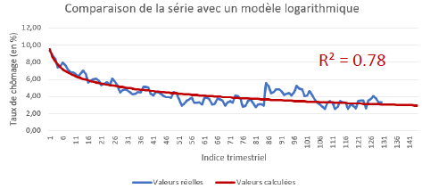
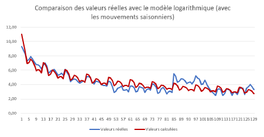
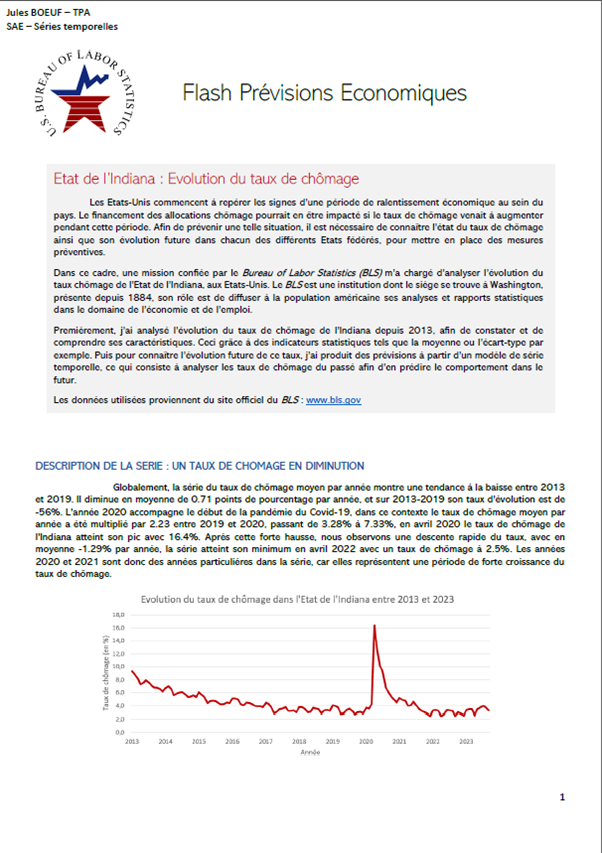

Forecasting time-based data
This group project involved using a statistical method, time series, to forecast the unemployment rate for 2023–2024 in the state of Indiana, in the United States. The work was based on historical unemployment data for Indiana, downloaded from the website of the Bureau of Labor Statistics, a US institution that produces statistical studies for the public. The work was done in Excel.
Before predicting the data, we first did an exploratory analysis, looking at the unemployment rate from different angles, such as how it changed over time, and the evolution of the mean and standard deviation. This helped us to get familiar with the data. After that, we could start to test and use different models to estimate the data. The shape of the unemployment rate curve suggested a logarithmic function, which gave good estimates. To improve these results further, seasonal patterns were estimated so the curve would fit the data better.
The project was summarized in Word as a statistical report. The ending of the report included advices for decision-makers based on the results obtained.
Skills learned:
- Improving my skills with Excel
- Writing a statistical report
- Understanding the case use of time series
- Cleaning data and testing a statistical model
Illustrations

Logarithmic model

Logarithmic model with seasonal patterns

Overview of the report